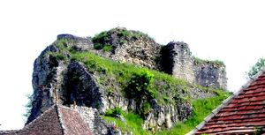
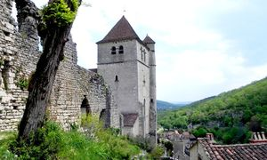
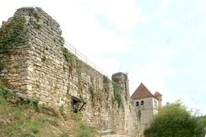
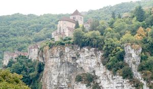
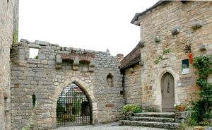
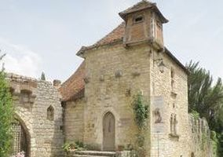
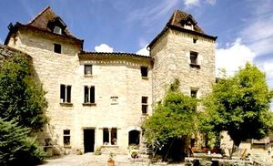
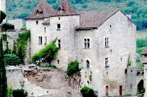

St_Cirq_Lapopie
| Département | 46 — Lot |
| Canton | Carjac |
| Commune | Saint-Cirq Lapopie |
| Type d'édifice | Vestiges |
| Période d'origine | X-XIII |









Histoire
ST-CIRQ-LAPOPIE, le fort de Saint-Cirq Lapopie dominant le village. C'est tout d'abord Oldoric, vicomte de Saint Cirq, qui, à partir du Xe siècle, y fit construire le premier château. Dès le XIIIe siècle, trois familles seigneuriales se partagèrent le Fort et y construisirent leur château. Tout en rendant hommage au Comte de Toulouse et aux Rois de France, Les Lapopie, Les Gourdon et Les Cardaillac cohabitèrent au sein de ce même ensemble castral. Il ne reste plus grand chose du château-fort aujourd'hui. Il fut tout d'abord assiégé par Richard Coeur de Lion en 1199. Par la suite, le roi Louis XI ordonna son démantèlement afin de punir le soutien du seigneur de Cardaillac de l'époque au duc de Berry, pendant la guerre du bien public. Charles VIII fit reconstruire l'édifice en dédommagement des préjudices causés par Louis XI. Il fut saccagé et ruiné sous le règne d'Henri IV, au cours des guerres de religion opposant catholiques et protestants. La forteresse ne se relèvera jamais de ses ruines. Ses seigneurs déserteront les lieux. En 1645, Geoffroy de Cardaillac vend à une branche collatérale sa co-seigneurie de Saint-Cirq. En 1672, Michel de Vidéran achète les possessions des de Cardaillac. En 1602, la partie relevant des Hébrard de Saint-Sulpice était passée par alliance aux Crossol d'Uzès. Leur descendant, Charles-Amable de Crossal, marquis de Montsalès, vendra la totalité de ses biens en 1717 à maître Peyre. Les Gourdon, présents depuis 1196 à Saint-Cirq-La-Popie, s'étaient défaits de leur part en 1420. En aval de Saint-Cirq-Lapopie : Bouziès, ce hameau est dominé sur la rive opposée par une route qui offre des points de vue exceptionnels. On trouve plusieurs châteaux des Anglais dans les rochers bordant le Lot entre Cahors et Figeac, unique voie de communication. Ces fortifications troglodytiques existaient déjà avant la guerre de Cent Ans. Ces constructions servaient des repères de brigands à la solde de lAnglais. Mais ce château ne fut aménagé qu'au XIVe siècle, il se situe au dessus du tunnel percé dans la roche, juste avant le pont qui mène au bourg de Bouziès en venant de Cahors.
Architecture
Saint Cirq Lapopie aujourd'hui, Il subsiste aujourd'hui quelques traces des châteaux des seigneurs. On dénombre une tour du XIIIe siècle, un corps de logis et une enceinte autonome datant de la fin XIIIe siècle au début XIVe siècle. Le Fort de Saint Cirq Lapopie, ce sont aujourd'hui des vestiges de l'histoire. Sur les traces des seigneurs, montez les marches jusqu'au rocher de La Popie; vous pourrez admirer le village médiéval mais également la vallée du Lot, avec ses moulins, barrages, ports, écluses et le célèbre Chemin de Halage. Le château au cur du village de Saint-Cirq-Lapopie, bénéficie dune situation exceptionnelle. Les vestiges du château se composent d'une courtine percées de fenêtres, de latrines et de salles qui, sur trois niveaux étagés, viennent s'accoler au rempart. Ces différents états sont en partie masqués par des apports importants de remblais. La salle basse, accessible par une brèche ancienne pratiquée à la base de la courtine sud, a été vidées des remblais d'abandon post-médiévaux qui la comblaient partiellement. D'une superficie de 48 m² et voûtée d'un berceau continu, la salle devait être à usage de cave ou de remise, très peu éclairée au nord par une fenêtre en meurtrière. Elle est desservie dans l'angle nord ouest par un escalier en quart de cercle, dégagé sur les huit côtés.
Habitants / Familles
Geoffroy de Cardaillac
"
Divers
Vestiges du château fort de Saint-Cirq-Lapopie.